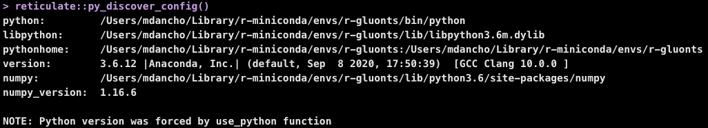
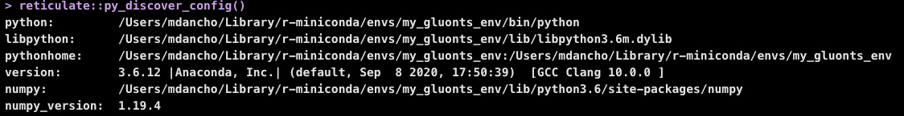

Install from GitHub
Modeltime GluonTS is maintained on GitHub and can be installed using:
remotes::install_github("business-science/modeltime.gluonts")Installation
There are 2 key components to installing modeltime.gluonts:
Download the R-Package,
modeltime.gluonts. This installs the R-Bindings, which allows you to interface with GluonTS.Set up the Python Environment so
modeltime.gluontscan connect to thegluontspython package.
Step 1: Download & Install Modeltime GluonTS
Download the latest GitHub version.
remotes::install_github("business-science/modeltime.gluonts")Step 2: Default Python Environment Setup
We’ve provided a helper function, install_gluonts() to prepare and bind to a python environment containing gluonts and the required python packages.
- You only need to run this one time, and then you are good to go.
- Each time you load
modeltime.gluonts, the package will include this environment in it’s search process.
# GluonTS Installation - Run 1st time
install_gluonts(fresh_install = FALSE, include_pytorch = FALSE)What happens:
fresh_install: Default:FALSE. IfTRUE, this removes any previous “r-gluonts” environments, which can help in the case of errors. Caution: If you have added packages to this environment after a prior install, these packages will be removed.include_pytorch: Default:FALSE. IfTRUE, will install the optional Pytorch and Pytorch Lightning dependencies for use with the “torch” engine, which is available in models such asdeep_ar().
Step 3: Restart R and Try an Example
Restart your R session (if in RStudio, close and re-open). Then try this example.
library(modeltime.gluonts)
library(tidymodels)
library(tidyverse)
# Fit a GluonTS DeepAR Model
model_fit_deepar <- deep_ar(
id = "id",
freq = "M",
prediction_length = 24,
lookback_length = 48,
epochs = 5
) %>%
set_engine("gluonts_deepar") %>%
fit(value ~ ., training(m750_splits))
# Forecast with 95% Confidence Interval
modeltime_table(
model_fit_deepar
) %>%
modeltime_calibrate(new_data = testing(m750_splits)) %>%
modeltime_forecast(
new_data = testing(m750_splits),
actual_data = m750,
conf_interval = 0.95
) %>%
plot_modeltime_forecast(.interactive = FALSE)
Upgrading to Modeltime GluonTS >= 0.3.0
Modeltime GluonTS 0.3.0 introduced new features that are only available in GluonTS >= 0.8.0. To incorporate these features, we now need to upgrade GluonTS.
First, upgrade modeltime.gluonts:
remotes::install_github("business-science/modeltime.gluonts")Next, we recommend running install_gluonts() with fresh_install = TRUE. This will completely replace your previous “r-gluonts” python environment with a new one. It’s designed to help reduce the likelihood of errors during the upgrading process.
install_gluonts(fresh_install = TRUE)Optionally, you can add the Pytorch Backend (new feature) with:
install_gluonts(fresh_install = TRUE, include_pytorch = TRUE)Troubleshooting Installation
Python Environment setup is always fun. Here are a few recommendations if you run into an issue.
Check to make sure Conda or Miniconda is available using
reticulate::conda_version(). If no conda version is returned, then usereticulate::install_miniconda()to install Miniconda (recommended vs full Aniconda). Then (re-)runinstall_gluonts().Check if GluonTS (Python) is available using
reticulate::py_module_available("gluonts"). If this returnsTRUE, then your installation has succeeded in building the environment, but you may have other issues like missing C++ build tools (next).Windows 10 error: Microsoft Visual C++ is required. Here are the instructions for installing the C++ tools needed.
Other installation issues. Please file a GitHub issue here.
Python Environment Requirements
The modeltime.gluonts >= 0.3.0 has the following minimum python environment requirements. We provide a helper function install_gluonts() to help set these up.
- A recent version of Python (Recommend 3.7)
- A Python environment containing the “GluonTS Stack”:
-
gluonts>=0.8.0(required formodeltime.gluonts>= 0.3.0) mxnetpandasnumpypathlib
-
Optional: Dependencies for Pytorch:
torchpytorch_lightning
That’s it. If you have these inside a Conda or Virtual Environment, then you can use modeltime.gluonts.
Custom Python Environments
There are 2 main ways to connect an python environment to modeltime.gluonts:
Default GluonTS Environment Setup: Most proven. Modeltime GluonTS creates an ‘r-gluonts’ environment with python package versions that were tested.
Custom GluonTS Environment Setup: Most flexible. You create the environment, you ensure that dependency requirements are met, and you define how to connect to it.
Method 1: Modifying the Default Environment Setup
This process uses the Conda Package Manager to set up a new conda environment called “r-gluonts”. It’s quick and easy, and most importantly the package versions that are selected all work together (I test them when developing). And, you can modify it once created.
1. Make sure you have conda
Get the conda version. If you don’t have conda, then install with reticulate::install_miniconda() or reticulate::conda_install().
reticulate::conda_version()2. Run install_gluonts() (set up the Default Environment):
This downloads the “GluonTS Stack” that the modeltime.gluonts package is tested using and places it into a Conda environment named “r-gluonts”. When you run library("modeltime.gluonts"), it attempts to use the “r-gluonts” environment.
modeltime.gluonts::install_gluonts()3. [Optional] Modifying the Default Environment:
You can modify this environment, adding more python libraries as needed.
reticulate::py_install(
envname = "r-gluonts",
packages = c(
"sklearn"
),
method = "conda",
pip = TRUE
)4. Activate the Default Environment:
Each time you load library(modeltime.gluonts), the package will bind to the “r-gluonts” python environment by default. If found, it will automatically bind to this environment.
5. Check the Environment
Make sure that the environment has been changed to the default ‘r-gluonts’ environment. We can see that r-gluonts environment is being used in the python path.
reticulate::py_discover_config()
Method 2: Making Custom Environments
It’s quite possible you may have a Virtual Environment or different Conda Environment that you would prefer to use. This is possible by setting a System Environment Variable named ‘GLUONTS_PYTHON’ before running library(modeltime.gluonts).
1. Create a Custom Python Environment
You can create an environment containing the python packages needed.
reticulate::py_install(
envname = "my_gluonts_env",
python_version = "3.6",
packages = c(
"mxnet==1.6.0",
"gluonts==0.6.3",
"pandas",
"numpy",
"pathlib"
),
method = "conda",
pip = TRUE
)2. Locate the Python Path
This locates the path to the python executable for the ‘my_gluonts_env’ environment that we just created.
library(dplyr)
my_gluonts_env_python_path <- reticulate::conda_list() %>%
filter(name == "my_gluonts_env") %>%
pull(python)
my_gluonts_env_python_path
#> "/Users/mdancho/Library/r-miniconda/envs/my_gluonts_env/bin/python"3. Set the System Environment Variable
Set the system environment variable named ‘GLUONTS_PYTHON’ with the path to the python executable. Once this is set, loading library(modeltime.gluonts) will use this path to activate the environment.
Sys.setenv(GLUONTS_PYTHON = my_gluonts_env_python_path)Verify it’s been set.
Sys.getenv("GLUONTS_PYTHON")
#> "/Users/mdancho/Library/r-miniconda/envs/my_gluonts_env/bin/python"5. Load Modeltime GluonTS
Running library(modeltime.gluonts) now binds to the custom environment.
6. [Gotcha #1] Check Your Environment
Make sure that the environment has been changed to the default reticulate environment. We can see that environment is being used. If setting your python environment was done properly, you should see my_gluonts_env in the Python Path.
Troubleshooting: If the incorrect environment is shown, simply restart your R Session,
reticulate::py_discover_config()